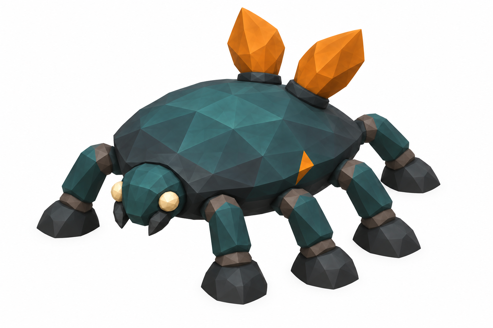
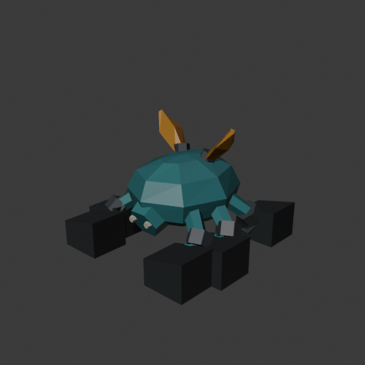
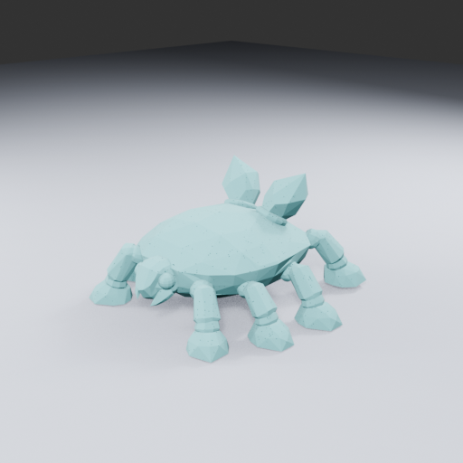
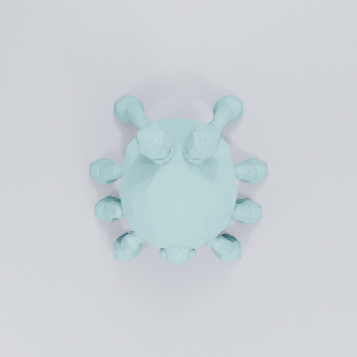
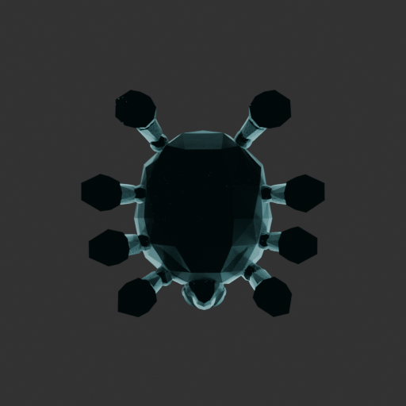
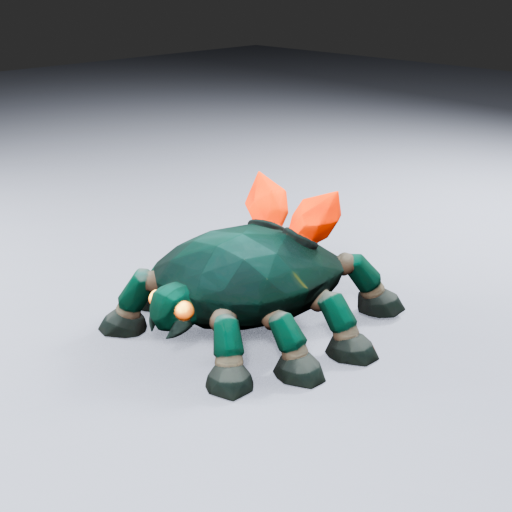
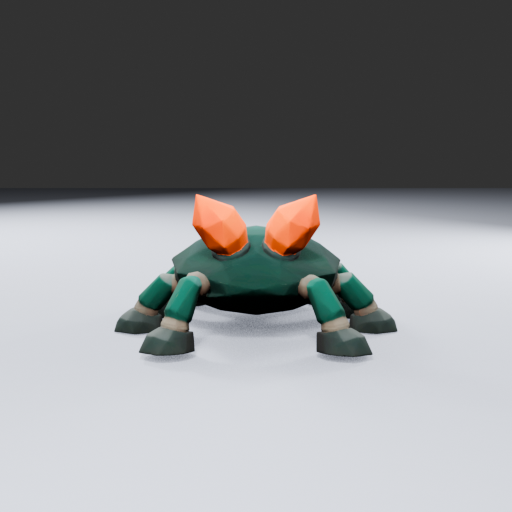
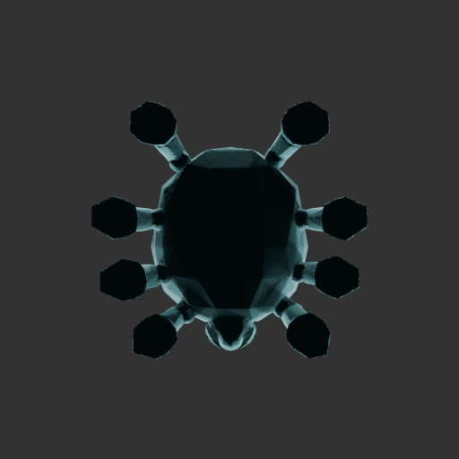

Generated 2D reference
Design target — not a 3D model

Approved for one-image TRELLIS conditioning. Far-side leg anatomy is inferred and must be checked in the resulting model.
TRELLIS is now the first choice for the organic master. The prepared manual foot repair was paused before execution. Keep useful existing work and judge the generated shape separately.
Design target — not a 3D model

Approved for one-image TRELLIS conditioning. Far-side leg anatomy is inferred and must be checked in the resulting model.
Actual scripted geometry — not TRELLIS output

Preserved body/legs/fronds with oversized dark foot blocks. No runtime admission.
Actual TRELLIS geometry successfully exported: 889,679 vertices and 1,804,432 triangles, preserved as a 34.13MB raw master. Blender imported the coordinates and triangles exactly and produced 21 views. The neutral teal below is inspection clay, not TRELLIS texture. The ordinary service/startup and staged full-export failures are preserved as earlier workflow evidence.
3D mesh · neutral inspection color

Actual 3D geometry · anatomy inspection

Raw geometry · cleanup still pending

Independent raw model review · Exact import and view receipt · Built-in simplification audit · Next textured derivative plan
Independent input and route review · Service result · Staged result · Raw shape export plan review
Exported 3D model — retained for further production review
The built-in remesh, simplification, UV and texture-baking pipeline produced a 3,889,708-byte GLB with 59,376 triangles and 40,868 exported vertices, retaining the 1.8-million-triangle master separately. No image generation or shape inference was repeated. These are actual Blender renders of that GLB, with copied matte materials for inspection.

Generated color, eight legs (four per side) and amber fronds. Earlier six-leg descriptions were corrected during rig inspection.

Hidden-side anatomy check.

Shape check without generated color.
Independent derivative review · 42-view inspection receipt · Retained textured GLB · Execution and limitations
Source geometry, materials and smoothing were restored in the editable inspection scene. Scale fitting, eight-leg animation and gameplay admission remain pending. Export logs prove native stages ran; the intended per-phase memory trace recorded no phase samples, so no measured peak or verified phase-guard claim is made.